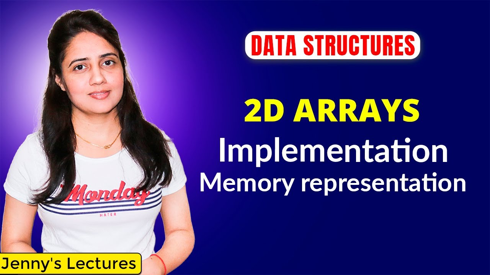
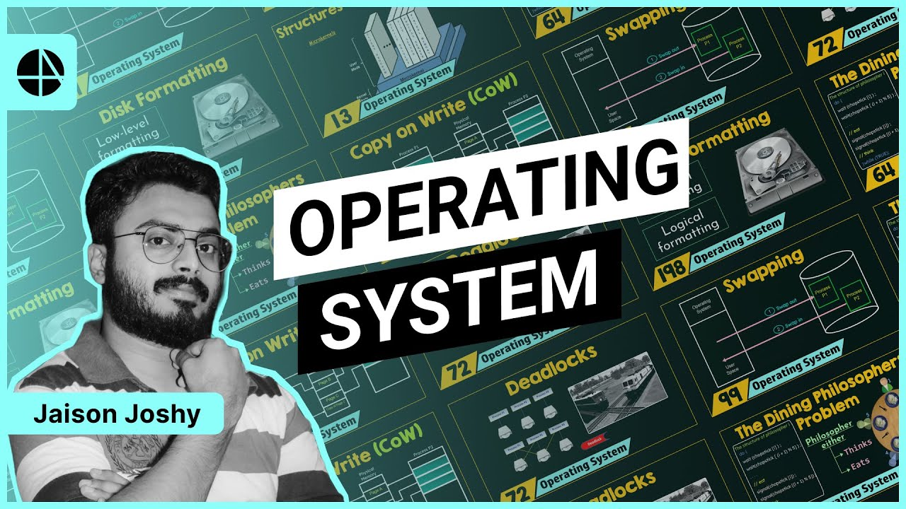
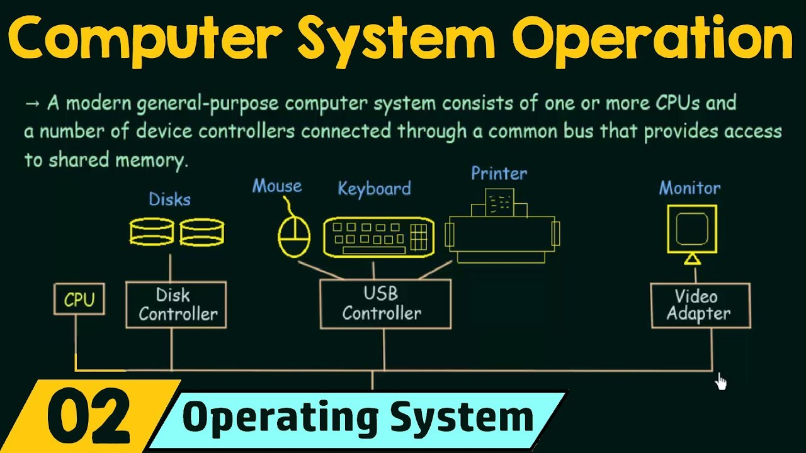
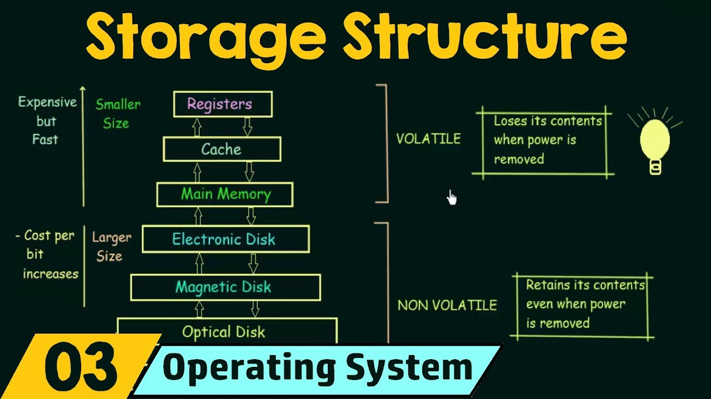
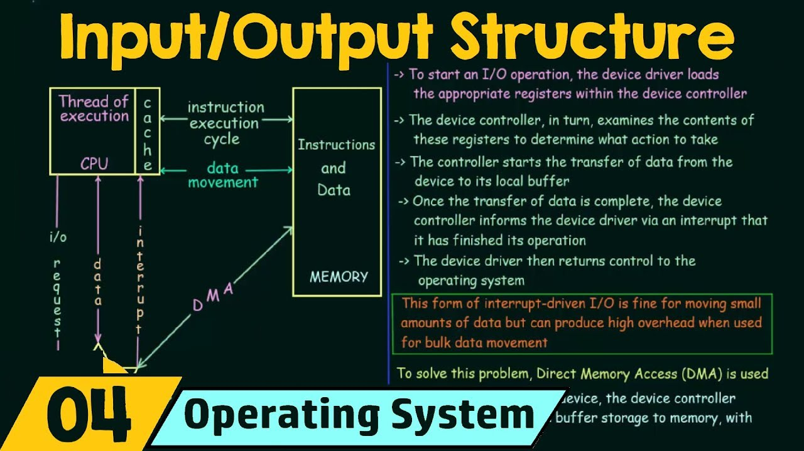
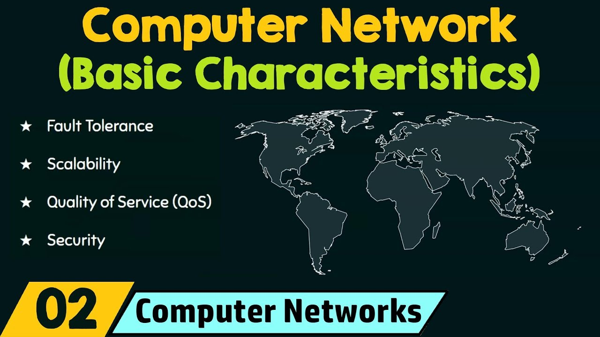
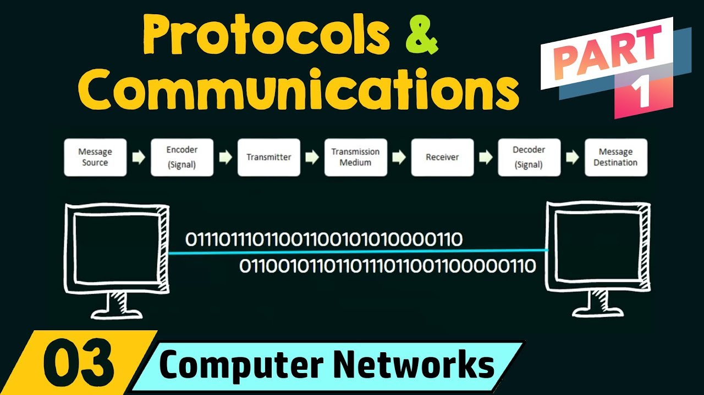
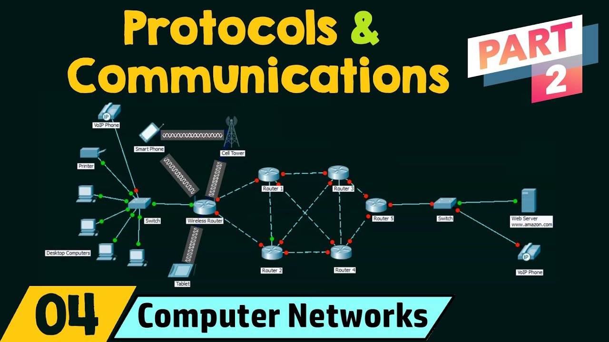

1.1 Arrays in Data Structures
An array is a data structure that stores multiple values of the same type in contiguous memory locations. Each element is accessed using an index, starting from 0. Arrays allow fast access but have a fixed size.
DSA (Data Structures and Algorithms) is the study of how data is stored and organized and how problems are solved efficiently using that data.
An array is a data structure that stores multiple values of the same type in contiguous memory locations. Each element is accessed using an index, starting from 0. Arrays allow fast access but have a fixed size.
Array operations are actions performed on arrays like insertion, deletion, traversal, searching, and updating. They help in managing and manipulating the stored data.
Pointers store the address of a variable and arrays store multiple values in contiguous memory. In arrays, the array name acts like a pointer to the first element.Pointers are used to access and manipulate array elements.

A 2D array is an array of arrays used to store data in rows and columns. It is commonly used to represent tables or matrices. Elements are accessed using two indices: row and column.

An Operating System (OS) is system software that manages computer hardware and software resources. It acts as an interface between the user and the computer hardware and controls tasks like memory management, process scheduling, and file handling.

A process is a program that is currently being executed. The operating system manages processes using different states such as new, ready, running, waiting, and terminated to ensure efficient execution.

CPU scheduling determines which process gets access to the CPU. Common algorithms include First Come First Serve (FCFS), Shortest Job First (SJF), Priority Scheduling, and Round Robin.

A deadlock occurs when two or more processes wait indefinitely for resources held by each other. The operating system must detect, prevent, or avoid deadlocks to keep the system running smoothly.
A Database Management System (DBMS) is software used to store, manage, and retrieve data efficiently. It provides a structured way to organize data using tables and ensures data security and consistency.
The ER model is used to design databases by representing entities, attributes, and relationships. It helps visualize how data is connected before creating database tables.
Normalization is the process of organizing data to reduce redundancy and improve data integrity. It divides tables into smaller ones and establishes relationships between them.
Structured Query Language (SQL) is used to interact with databases. It allows users to create tables, insert data, retrieve records, update values, and delete information.
A computer network is a collection of interconnected devices that communicate with each other to share resources such as files, printers, and internet connections.

The OSI model is a conceptual framework that divides network communication into seven layers, including physical, data link, network, transport, session, presentation, and application.

The TCP/IP model is the practical networking model used on the internet. It consists of four layers: network access, internet, transport, and application.

Routing is the process of selecting paths in a network along which data travels. Routers, switches, and hubs help direct data between devices efficiently.